Dritte Aufwertung
Jede Ansicht zweimal, bei 360 px: links, wie sie heute aussieht, rechts der Entwurf. Gebaut ist der Entwurf in der echten App mit den echten Partien der Liga und ihren eigenen Bauteilen — eingebaut ist davon noch nichts.
Ein Bauteil, überall dasselbeDas Titelrennen, die Tagesbahn, die runden Chips und die Abschnittsköpfe sind die, die die App schon hat. Neu sind das Feld, die Woche, der Kalender, die Landkarte und das Netz — und jedes davon steht an mehr als einer Stelle.
Farbe sagt etwasGrün und Rot nur für gewonnen und verloren, Gold nur für den, der einen Titel trägt, alles Übrige Metall. Keine neue Farbe.
Bewegung, die erklärtBalken wachsen auf, Linien zeichnen sich in Spielreihenfolge, Gesichter kommen nacheinander. Nur Transform und Deckkraft, bei Bewegungsruhe steht alles.
Telefon zuerstAlles ist bei 360 px gebaut und gemessen, jede Grafik skaliert mit der Breite und läuft nicht über den Rand.
Reiter
Liga
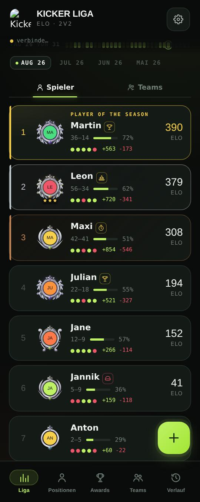
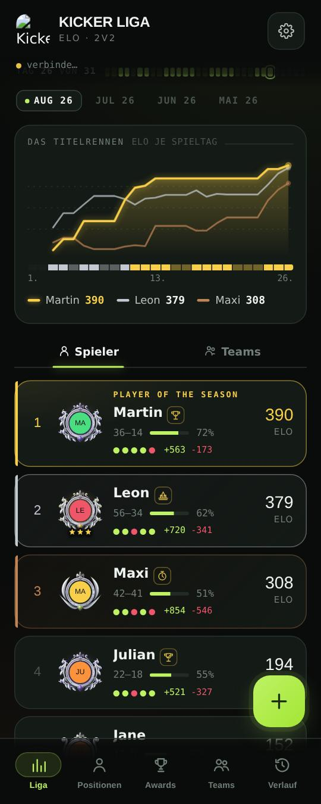
- Das Titelrennen steht über der Rangliste: die Saison-Elo der ersten drei an jedem Spieltag, der Erste golden, darunter das Band, wer an welchem Tag vorn lag.
- Es ist dasselbe Bauteil wie in der Meister-Karte und im Saison-Rückblick (saisonRennenHtml) — die Liga zeigt den laufenden Monat damit so, wie der Rückblick ihn später zeigt.
- Die Linien zeichnen sich von links nach rechts auf, bei Bewegungsruhe stehen sie.
Positionen
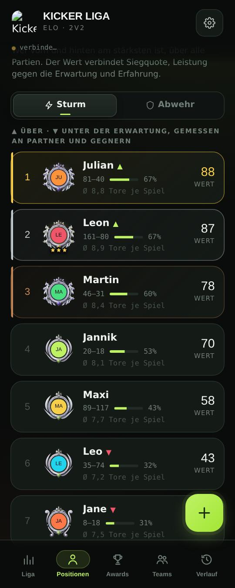
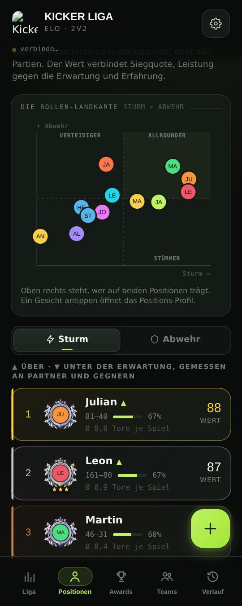
- Die Rollen-Landkarte: jeder Spieler steht dort, wo sich sein Sturm- und sein Abwehrwert kreuzen — dieselben Werte wie in der Liste darunter (posWert).
- Oben rechts liegt das Feld der Allrounder, leise hinterlegt. Wer stärker stürmt, steht unten rechts, wer stärker verteidigt, oben links.
- Die Gesichter kommen nacheinander, gestaffelt — nur Deckkraft und Größe bewegen sich.
Teams
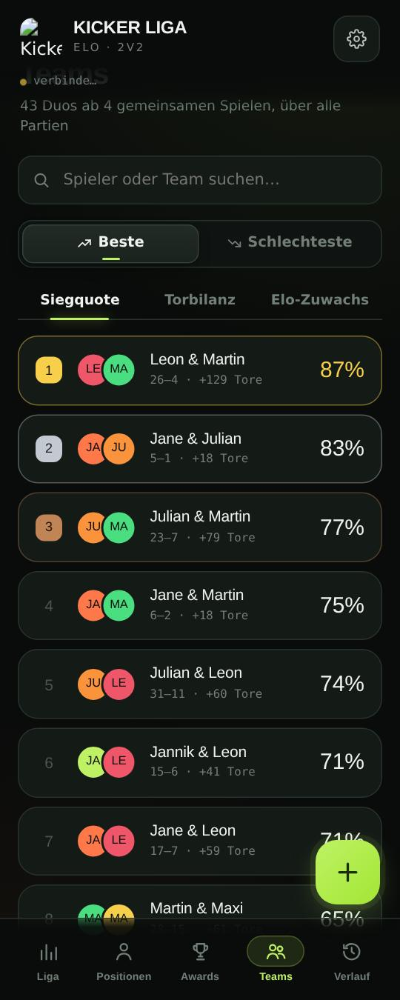
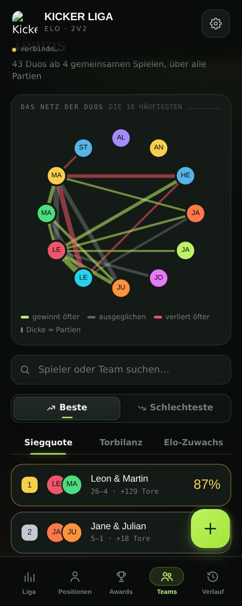
- Das Netz der Duos: jeder Spieler sitzt auf einem Kreis, jede Linie ist ein Duo ab vier gemeinsamen Partien.
- Die Dicke zählt die Partien, die Farbe sagt die Richtung: Grün gewinnt öfter, Rot verliert öfter, Metall liegt dazwischen [§C25].
- Man sieht auf einen Blick, wer mit wem spielt und welche Paare tragen — die Liste darunter bleibt die Rangfolge.
Verlauf
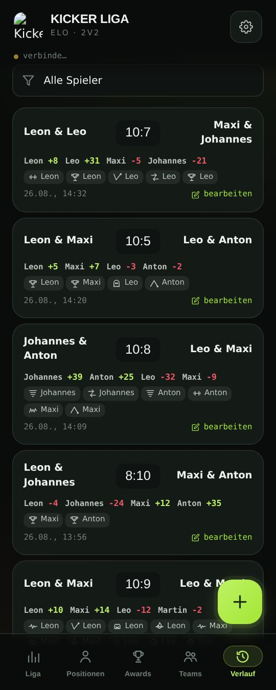
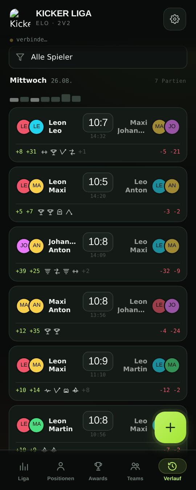
- Der Verlauf ist nach Spieltagen gegliedert: Wochentag, Datum, Zahl der Partien, darunter der Tag als Bahn — ein Strich je Partie, so hoch, wie klar das Ergebnis war.
- Jede Partie zeigt ihre Gesichter: die Sieger links und hell, die Verlierer rechts und leiser, der Stand in der Mitte mit seiner Uhrzeit — wie die Bühne einer Partie [§C27].
- Die Elo je Spieler steht im Fuß, die Auszeichnungen als Zeichen statt als Wolke aus Namen.
Match eintragen
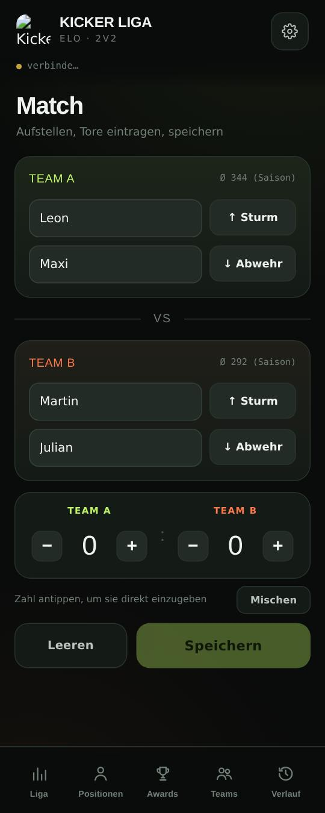
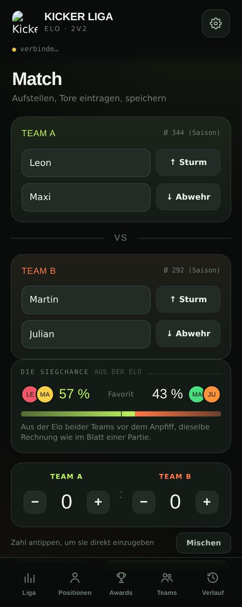
- Sobald vier Spieler stehen, zeigt die Eingabe die Siegchance aus der Elo — mit dem Wort dazu (chanceWort), wie im Blatt einer Partie.
- Darunter, was ein Sieg je Spieler ungefähr bringt: wer gegen Favoriten antritt, sieht vor dem Anpfiff, worum es geht.
Blätter
Profil
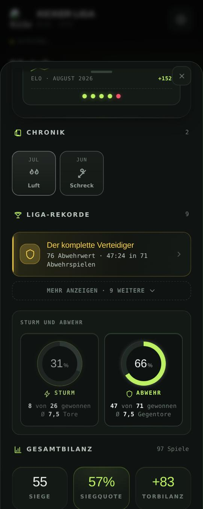
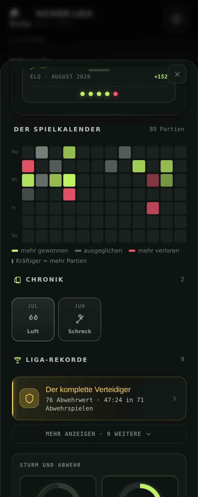
- Der Spielkalender: die letzten zwölf Wochen als Raster, eine Zelle je Tag. Grün, wo mehr gewonnen als verloren wurde, Rot umgekehrt, kräftiger mit mehr Partien.
- Er beantwortet, was die Zahlen darüber nicht sagen: wann jemand spielt, wie regelmäßig, und ob ein schwacher Monat an wenigen schlechten Tagen hängt.
Direkter Vergleich
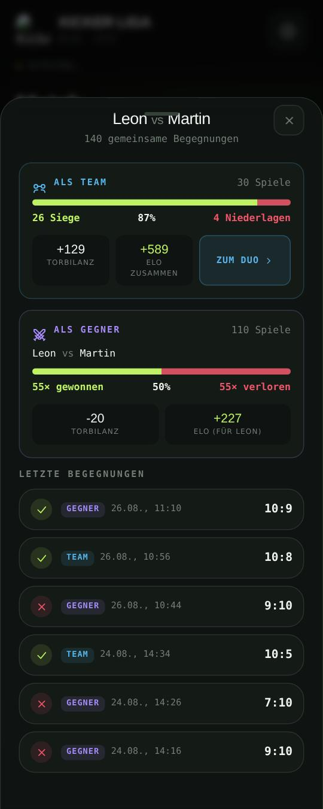
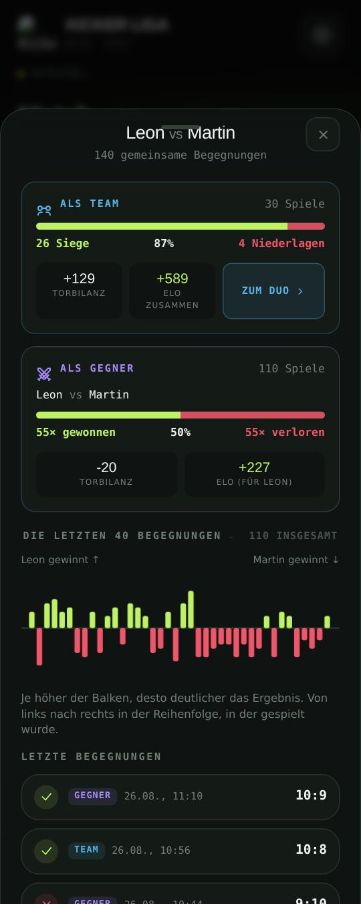
- Jede Begegnung als Balken: nach oben, wer links steht, nach unten der andere, so hoch, wie deutlich es ausging.
- Von links nach rechts in der Reihenfolge der Partien — Serien und Wenden der Rivalität sind zu sehen, ohne eine Zahl zu lesen.
Rückblicke
Saison-Rückblick
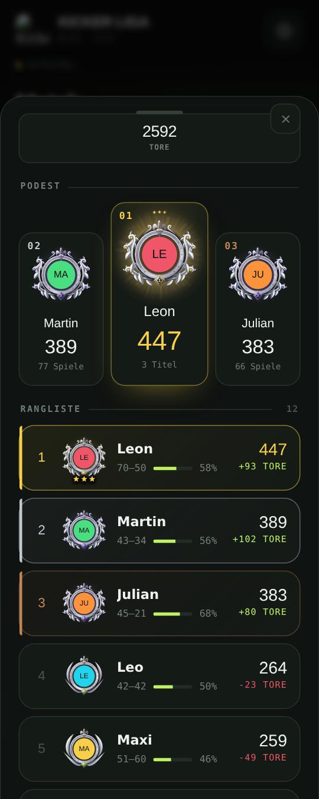
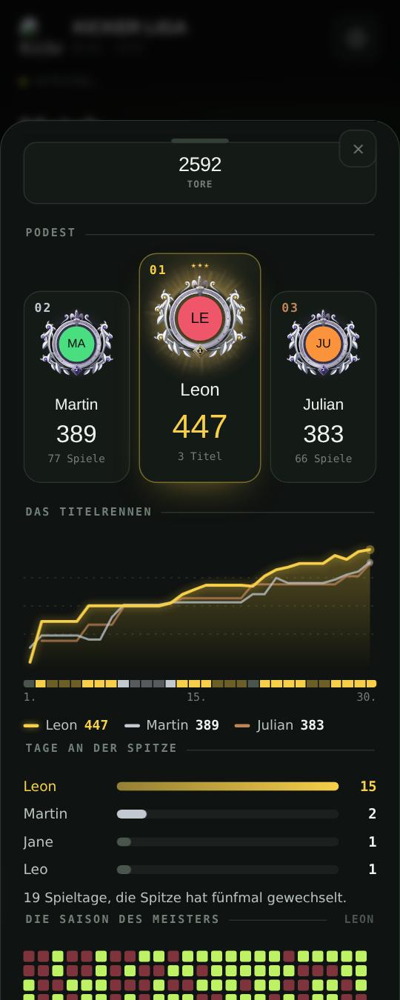
- Unter dem Podest steht das Titelrennen des Monats, die Tage an der Spitze und die Saison des Meisters als Zellen — dieselben drei Bauteile wie im Blatt der Meister-Karte.
- Der Rückblick erzählt damit, wie der Titel zustande kam, nicht nur, wer ihn hat.
Spieler der Woche
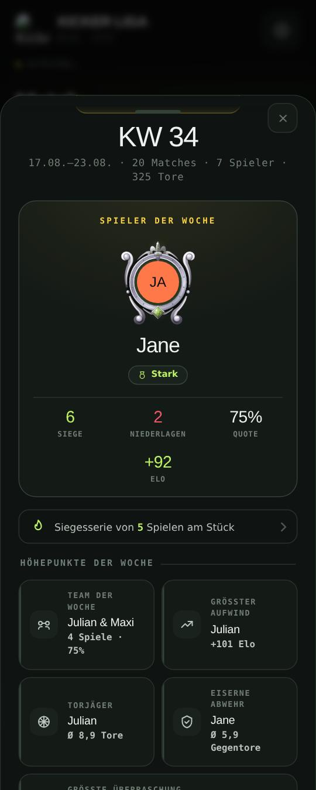
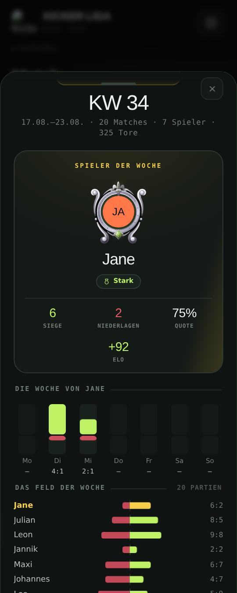
- Die Woche des Helden als sieben Spalten: oben die Siege, unten die Niederlagen, ein Tag ohne Partie bleibt leise stehen.
- Darunter das Feld der Woche: jeder Spieler mit Siegen nach rechts und Niederlagen nach links um eine gemeinsame Null — der Held in Gold, weil er den Titel trägt [§C25].
- Die Balken wachsen nacheinander auf, bei Bewegungsruhe stehen sie.
Spieler des Tages
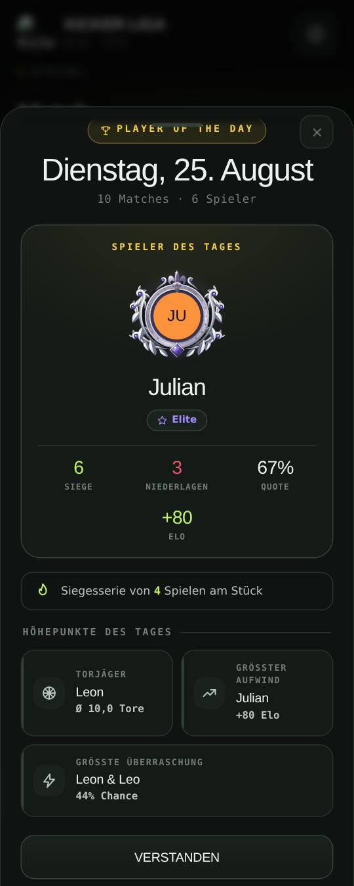
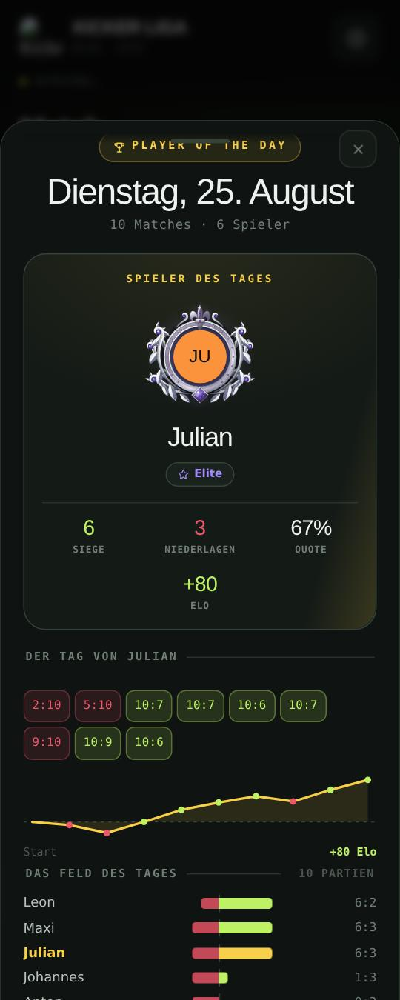
- Der Tag des Helden als Bahn — ein Feld je Partie, wie im Story-Blatt (_ndTagesbahn) —, darunter seine Elo über den Tag als Linie.
- Und das Feld des Tages, dasselbe Bauteil wie in der Woche: wer an diesem Tag wie oft gewonnen und verloren hat.
Was hier nicht steht: Awards, Rekorde, Chronik, Feed, Laufbahn, Duo-Blatt und das Blatt einer Partie sind in den letzten Runden schon gezeichnet worden — Kacheln mit Feld und Lauf, Belege, Bühne, Bildzonen je Kartensorte, die Leiter und jetzt die Aura. Dort gibt es nichts nachzuholen, nur die neuen Bausteine wiederzuverwenden: das Feld passt ins Award-Blatt, der Kalender ins Duo-Blatt.